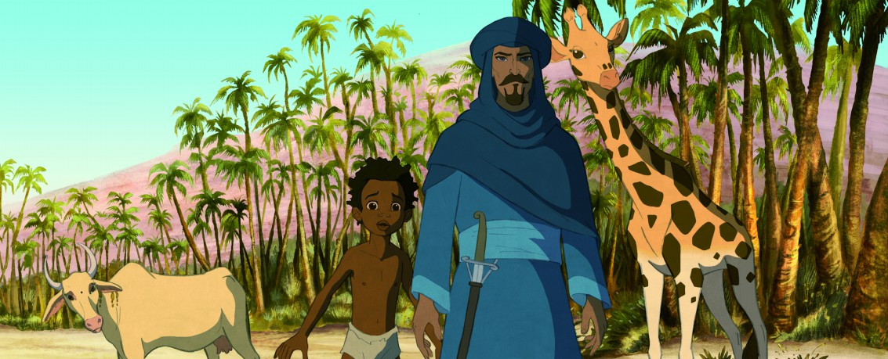

#2041 Die Abenteuer der kleinen Giraffe Zarafa
 
 IMDB-Wertung: 7.0 / 10
IMDB-Wertung: 7.0 / 10  Metascore: 64
Metascore: 64 
The plot of the film has a grandfather telling his grand kids the story of Maki, a young boy who escapes from slave traders, befriends a giraffe (the title character), cross the desert, meet a pirate, and a few other things on a trip that takes him from Africa to Paris.
Jahr: 2012
Dauer: 78 Minuten
FSK: 0
Land: Frankreich Studio: Alamode FilmverleihTonspuren:
Untertitel:
Auflösung: 1080p (1920x816) Größe: 2232 MB
Genre: Animation/Trick, Familie
Regisseur: Rémi Bezançon, Jean-Christophe Lie
Drehbuch: Alexander Abela, Rémi Bezançon
Soundtrack: Laurent Perez Del Mar
Darsteller:
Datei: X:\Kinder Filme (A-F)\Abenteuer der kleinen Giraffe Zarafa, Die (2012, FSK0, 1920x816).mkv seit 25.09.2015
Festplatte: Kinder-Filme+Trick
 Es gibt insgesamt 68 Filme in der Gruppe 'Kinder Filme (A-F)'
Es gibt insgesamt 68 Filme in der Gruppe 'Kinder Filme (A-F)'